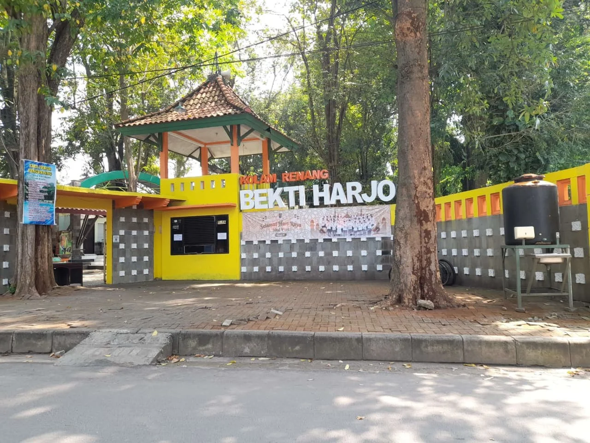

📖 E-Book Interaktif SD Kelas VI
Klik tombol panah untuk membalik halaman

Lokal Semanding
Ilmu Pengetahuan Sosial
Kata Pengantar
Assalamu'alaikum Warahmatullahi Wabarakatuh,
Puji syukur kita panjatkan ke hadirat Tuhan Yang Maha Esa. Atas rahmat dan hidayah-Nya, buku elektronik interaktif berjudul "Menggali Kearifan Lokal Semanding" ini dapat diselesaikan dengan baik.
Kecamatan Semanding bukan hanya tempat tinggal kita, tetapi juga tanah yang kaya akan sejarah, tradisi, dan nilai-nilai luhur yang diwariskan leluhur.
Melalui buku ini, kita diajak untuk lebih mengenal, mencintai, dan melestarikan budaya sendiri. Selamat membaca dan menjelajah!
Wassalamu'alaikum Warahmatullahi Wabarakatuh.
— Penulis
Petunjuk Penggunaan E-Book
Setelah membaca e-book ini, kamu akan mengenal sejarah, tradisi, kerajinan, dan seni budaya Kecamatan Semanding dengan bangga!
Mengenal Semanding
- Mengetahui letak geografis dan sejarah Semanding
- Menyebutkan potensi alam dan tempat bersejarah
Kecamatan Semanding terletak di bagian selatan Tuban, dengan wilayah yang sebagian besar berupa perbukitan kapur. Pada masa Kerajaan Majapahit, pusat pemerintahan Tuban pernah berada di Desa Prunggahan Kulon, Semanding.
Di sini juga terdapat banyak sumber mata air yang jernih dan menjadi tempat wisata favorit, seperti Pemandian Bektiharjo. Selain itu, daerah ini kaya akan hasil bumi seperti padi, jagung, dan kelapa.
- Semanding terdiri dari banyak desa, seperti Prunggahan Wetan, Bektiharjo, Karang, dan lain-lain.
- Wilayahnya yang bergunung-gunung membuat udaranya sejuk dan asri.

Tradisi & Upacara Adat
- Siswa dapat mengenal berbagai tradisi unik di Semanding.
- Siswa dapat memahami makna dan nilai yang terkandung di dalamnya.
Ritual Keleman atau Tingkepan Dewi Sri merupakan salah satu tradisi masyarakat Jawa yang masih dilaksanakan oleh warga Desa Ngino dan daerah sekitarnya sebagai bentuk penghormatan kepada Dewi Sri. Dalam kepercayaan masyarakat Jawa, Dewi Sri dianggap sebagai simbol kesuburan, kemakmuran, dan pelindung tanaman padi. Oleh karena itu, ritual ini dilakukan sebagai ungkapan rasa syukur sekaligus harapan agar hasil pertanian tetap baik dan panen melimpah.
Ritual ini biasanya dilaksanakan ketika tanaman padi mulai tumbuh subur atau menjelang masa panen. Kata “tingkepan” memiliki arti selamatan atau upacara khusus yang dilakukan untuk memohon keselamatan dan keberkahan. Sementara itu, istilah “keleman” berkaitan dengan kegiatan masyarakat tani dalam menjaga kesuburan sawah dan tanaman.
Pada pelaksanaannya, warga desa berkumpul di area persawahan dengan membawa berbagai makanan tradisional, terutama tumpeng, jajanan pasar, hasil bumi, dan lauk-pauk. Tumpeng berbentuk kerucut melambangkan rasa syukur kepada Tuhan atas rezeki yang diberikan. Selain itu, hasil bumi yang dibawa menunjukkan harapan agar tanah tetap subur dan memberikan kehidupan bagi masyarakat.
Acara biasanya diawali dengan doa bersama yang dipimpin oleh tokoh masyarakat atau sesepuh desa. Dalam doa tersebut, masyarakat memohon agar tanaman padi terhindar dari hama, bencana, dan penyakit yang dapat menyebabkan gagal panen. Setelah doa selesai, sebagian makanan dan hasil bumi ditaburkan di sawah. Kegiatan ini memiliki makna simbolis sebagai “tolak bala”, yaitu menolak segala hal buruk yang dapat mengganggu pertanian dan kehidupan masyarakat.
Selain sebagai tradisi adat, Ritual Keleman juga menjadi sarana mempererat hubungan sosial antarwarga. Masyarakat bekerja sama menyiapkan acara, memasak makanan, hingga mengikuti doa bersama. Hal ini menunjukkan adanya nilai gotong royong dan kebersamaan yang masih dijaga dalam kehidupan desa.
- Nilai Rasa Syukur atas nikmat Tuhan, terutama hasil pertanian.
- Nilai Menjaga Keseimbangan Alam agar sawah dan tanaman terawat.
- Nilai Gotong Royong melalui kerja sama dan kepedulian warga.
- Nilai Pelestarian Budaya sebagai warisan turun-temurun.
- Nilai Spiritual bahwa doa dan usaha harus berjalan bersama.
Siraman Waranggono merupakan salah satu tradisi budaya yang bersifat sakral dan masih dilestarikan oleh masyarakat di kawasan Pemandian Bektiharjo. Tradisi ini dilakukan sebagai prosesi penyucian atau “wisuda” bagi para penari Tayub sebelum mereka diperbolehkan tampil di depan umum. Dalam budaya Jawa, penari Tayub sering disebut sebagai “Waranggono” atau “Sindir”, yaitu perempuan yang memiliki kemampuan menari dan menyanyi dalam pertunjukan seni tradisional Tayub.
Tradisi siraman memiliki makna penting karena dianggap sebagai tahap awal bagi seorang penari untuk memasuki dunia seni pertunjukan. Prosesi ini tidak hanya bertujuan membersihkan tubuh secara fisik, tetapi juga menyucikan hati, pikiran, dan niat para penari agar mereka dapat menjalankan seni dengan baik, sopan, dan penuh tanggung jawab.
Pelaksanaan Siraman Waranggono biasanya dilakukan di sumber mata air atau tempat pemandian yang dianggap memiliki nilai sejarah dan kesakralan, salah satunya di Pemandian Bektiharjo. Tempat ini dipercaya memiliki air yang bersih dan membawa keberkahan. Sebelum prosesi dimulai, para calon Waranggono mengenakan pakaian putih bersih sebagai simbol kesucian dan niat yang tulus. Warna putih melambangkan hati yang bersih, kejujuran, dan kesiapan untuk menjalani tanggung jawab sebagai pelaku seni budaya.
Acara kemudian dipimpin oleh sesepuh atau tokoh adat yang dihormati masyarakat. Para calon penari disiram air secara bergantian sambil dipanjatkan doa-doa keselamatan dan harapan agar mereka menjadi seniman yang berbudi baik, menjaga nama baik seni tradisional, serta memberikan hiburan yang bermanfaat bagi masyarakat. Air dalam prosesi siraman melambangkan pembersihan diri dari sifat buruk dan harapan agar kehidupan mereka dipenuhi keberkahan.
Setelah prosesi selesai, para Waranggono dianggap telah resmi diterima dan diperbolehkan tampil dalam pertunjukan Tayub. Tradisi ini menjadi bentuk penghormatan terhadap seni tradisional karena seorang penari tidak hanya dituntut memiliki kemampuan menari, tetapi juga harus menjaga etika, sikap, dan tata krama dalam kehidupan sehari-hari.
Selain memiliki nilai spiritual, Siraman Waranggono juga menjadi sarana pelestarian budaya daerah. Melalui tradisi ini, generasi muda diajarkan untuk menghargai seni tradisional sebagai warisan leluhur yang memiliki makna mendalam, bukan sekadar hiburan semata.
- Nilai Kesucian Hati sebelum menjalankan tugas.
- Nilai Penghormatan terhadap Seni yang dijaga dengan tanggung jawab.
- Nilai Disiplin dan Tanggung Jawab sebagai pelaku seni daerah.
- Nilai Pelestarian Budaya agar seni Tayub tetap lestari.
- Nilai Spiritual dan Kebersamaan melalui doa bersama.
Tabuh Lesung merupakan salah satu kesenian tradisional masyarakat Jawa yang berkembang di wilayah Semanding dan beberapa daerah pedesaan lainnya. Kesenian ini menggunakan lesung sebagai alat utama. Lesung adalah alat tradisional yang terbuat dari kayu panjang dan biasanya digunakan untuk menumbuk padi agar terpisah dari kulitnya. Alat penumbuknya disebut alu. Pada zaman dahulu, sebelum adanya mesin penggiling padi modern, masyarakat menggunakan lesung dalam kehidupan sehari-hari untuk mengolah hasil panen.
Seiring perkembangan budaya masyarakat, lesung tidak hanya digunakan sebagai alat pertanian, tetapi juga dimanfaatkan sebagai alat musik tradisional. Ketika dipukul menggunakan alu, lesung menghasilkan bunyi yang khas dan berirama. Dari bunyi tersebut lahirlah kesenian yang disebut Tabuh Lesung. Irama yang dihasilkan terdengar unik karena setiap bagian lesung menghasilkan suara yang berbeda-beda. Biasanya, beberapa orang memainkan lesung secara bersama-sama sehingga tercipta perpaduan bunyi yang harmonis.
Pada masa lalu, suara tabuhan lesung juga berfungsi sebagai alat komunikasi masyarakat desa. Bunyi tertentu digunakan untuk memberi tanda kepada warga, misalnya saat ada kerja bakti, panen raya, hajatan, atau peristiwa penting lainnya. Karena suara lesung cukup keras, bunyinya dapat terdengar hingga ke berbagai sudut desa. Dengan demikian, masyarakat dapat segera berkumpul dan saling membantu.
Dalam pelaksanaannya, Tabuh Lesung dimainkan secara berkelompok. Para pemain bekerja sama memukul lesung dengan pola irama tertentu agar menghasilkan musik yang teratur dan indah. Permainan ini biasanya dilakukan oleh ibu-ibu atau warga desa saat acara adat, syukuran panen, pertunjukan budaya, maupun festival daerah. Selain menjadi hiburan rakyat, Tabuh Lesung juga mencerminkan kehidupan masyarakat agraris yang dekat dengan alam dan pertanian.
Kesenian Tabuh Lesung memiliki makna sosial yang kuat. Tradisi ini menggambarkan semangat gotong royong dan kebersamaan masyarakat desa. Saat memainkan lesung, setiap pemain harus saling menyesuaikan irama agar menghasilkan bunyi yang harmonis. Jika salah satu pemain tidak kompak, maka irama yang dihasilkan menjadi tidak teratur. Hal tersebut mengajarkan pentingnya kerja sama dalam kehidupan bermasyarakat.
Selain itu, Tabuh Lesung juga menjadi simbol rasa syukur masyarakat atas hasil panen yang diperoleh. Bunyi tabuhan yang meriah menunjukkan kegembiraan warga setelah bekerja keras di sawah. Oleh karena itu, kesenian ini sering ditampilkan saat perayaan panen atau acara adat desa.
- Nilai Kerja Sama agar irama tetap kompak dan harmonis.
- Nilai Kebersamaan melalui latihan dan tampil bersama.
- Nilai Gotong Royong dalam kegiatan sosial masyarakat.
- Nilai Pelestarian Budaya agar tradisi tetap dikenal generasi muda.
- Nilai Rasa Syukur atas hasil bumi yang melimpah.
Kerajinan & Kearifan Hidup
Desa Karang dikenal sebagai sentra pembuatan gerabah/tembikar tradisional. Warga membuat gendok, kuali, dan berbagai peralatan rumah tangga dari tanah liat.
Desa Bejagung dikenal karena karya seni patung dan ukir. Para pengrajin menghasilkan berbagai karya yang mencerminkan kreativitas lokal dan kecintaan terhadap seni budaya.
Paes adalah tata rias wajah pengantin yang khas dari Semanding. Merupakan bagian penting dari tradisi pernikahan adat Jawa Tuban.
Paes bukan hanya dekorasi, tapi memiliki makna simbolis tentang harapan, kesetiaan, dan keberkahan bagi pengantin!
- Kreativitas dan keterampilan tangan warga
- Warisan leluhur yang terus hidup
- Sumber mata pencaharian ramah lingkungan
- Identitas budaya yang membedakan Semanding
Seni & Budaya yang Memukau
Pertunjukan tari tradisional yang dibawakan oleh penari wanita bernama Waranggono (Sindir). Diiringi gamelan dan lagu-lagu Jawa.
Kesenian rakyat dari kehidupan petani di sekitar Bengawan Solo. Menggabungkan cerita, lawakan, dialog, musik, nyanyian, dan tarian.
- Hiburan: Murah dan meriah bagi masyarakat desa
- Pendidikan: Pesan moral kerja keras & kejujuran
- Pelestarian: Menjaga tradisi & bahasa daerah
Musik tradisional dari bambu yang menghasilkan irama unik. Digunakan untuk mengiringi lagu daerah, pertunjukan rakyat, dan cerita tradisional.
Alat musik sederhana dari bambu dengan irama khas yang menarik. Bersifat tradisional dan merakyat!
✨ Tayub, Sandur, dan Kentrung merupakan kekayaan budaya yang membanggakan masyarakat Semanding — bukan sekadar hiburan, tapi cermin identitas!
Nyanyian Kearifan Lokal 🎵
🎵 🎶 🎵 Yuk nyanyikan lagu ini bersama teman-teman!
Yuk, Kita Coba! 📝
Pilih jawaban yang benar, lalu klik Kirim Jawaban!
Pesan & Glosarium 🌿
Kamu sudah mengenal kearifan lokal Semanding dengan baik. Terus lestarikan budaya kita! 🏛️